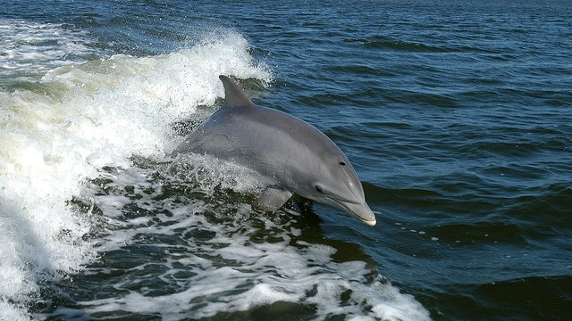

物理5–11 岁约 10 分钟
气泡围成一圈才围得住，气泡乱喷就鱼散了？
同一只纸座头鲸。气泡围成一圈才围得住；气泡乱喷就鱼散了。座头鲸绕着鱼群边转边吐泡，一串串气泡往上冒、连成一圈泡墙，鱼不敢穿泡，被赶得挤在圈里；圈围好了，它才从下面张着大嘴冲上去，一口装下一大团。泡一乱喷，墙连不成圈，鱼就从缺口散掉。本页不追真座头鲸，观察后洗手。
同一只纸座头鲸，泡网一回，气泡乱喷一回


气泡围成一圈才围得住。气泡乱喷就鱼散了。先点「泡网」，再点「试一试」。
先猜一猜，再试
第 1 题：调到 80，气泡围成一圈，围得住吗？
押一个。把滑条调到 80，再点试一试。
第 2 题：调到 10，气泡乱喷，还围得住吗？
押好后滑条 10，再试一试。
第 3 题：调到 50，刚好一半，算围得住了吗？
押好后滑条 50，再试一试。
同一只纸座头鲸：气泡围成一圈才围得住；气泡乱喷就鱼散了
先点「泡网」再点「试一试」，看围得住。再点「乱喷」试一次，看是不是鱼散了。
纸座头鲸始终是同一只。要紧的是泡围没围成圈：它绕着鱼群边转边吐泡，一串串气泡升上去连成一圈泡墙，鱼不敢穿泡，才被赶在圈里挤成一团；泡乱喷，墙连不起来，鱼从缺口溜走就散了。海豚也会吐泡，可不围成猎网——另开，不比。
舞台上的「围得住」是本页比较尺子：滑条 ≥ 80 才算围得住。刚好 50 还不够。不追真座头鲸，观察后洗手。本页用纸板。
泡网图鉴
点一张，对照舞台：谁让气泡围成一圈才围得住，谁让气泡乱喷就鱼散了。
点一张图鉴，对照为什么气泡围成一圈才围得住。
猜一猜
同一只纸座头鲸要围得住，靠的是泡网，还是气泡乱喷？
先押一个，再点「看答案」。
任务：泡网和气泡乱喷都试
先把滑条调到 80 或更高试一次，再调到 20 或更低试一次。两头都点过「试一试」即可完成。
开放式提示不会代替上面的正式任务。
尚未完成：先泡网试一次，或气泡乱喷试一次。
同一只纸座头鲸，先泡网试一次，再对照试一次
舞台上只改一件事：气泡围成一圈有多够。同一只纸座头鲸，先泡网试一次，看围不围得住；再对照试一次，看是不是鱼散了。这样比，才知道围得住靠的是连成一圈的泡墙把鱼赶在一起，不是「喷得更多」，也不是「换成海豚」。
回家只带两句：「气泡围成一圈才围得住」；「气泡乱喷就鱼散了」。不要写成「使劲喷泡就够了」。
泡连成一圈，鱼被赶在圈里，它才张着大嘴从下面冲上去。
泡乱喷连不成圈，鱼从缺口溜出去；要先把泡围成一圈。
海豚也吐泡，可不围成猎网，另开；本页比泡围没围成圈，两句不要并成一句。
不追真座头鲸，本页用纸板对照。
这在教什么：孩子要能对泡网和气泡乱喷各报成不成，并否定「海豚乱喷」和「换一套就一样」。
- 本页比的是纸座头鲸绕着鱼群边转边吐泡把气泡连成一圈泡墙围住鱼，还是海豚吐泡却不围成猎网那种童话？
- 气泡乱喷，台上还围得住吗？
- 本页比的是座头鲸绕着鱼群边转边吐泡、把气泡连成一圈泡墙围住鱼，还是海豚吐泡却不围成猎网的那一套？
- 能去追真座头鲸吗？
围得住靠气泡围成一圈，不是海豚乱喷，更不要去追真座头鲸
座头鲸从鱼群下面绕着圈往上吐泡，一串串气泡连成一圈泡墙，鱼不敢穿泡、被赶得挤在一起；圈围好了，它张着大嘴从下面冲上去，喉咙那一袋张开，一口装下一大团。泡乱喷，墙连不成圈，鱼从缺口散掉。
不要把它讲成「使劲喷泡就够了」或「换成海豚就行」。海豚吐泡不围成猎网，是另一套；有的鲸用尾巴拍水赶鱼，又是另一招的账。座头鲸这一口，先看泡围没围成圈。
不追真座头鲸。看完按二十秒洗手。本页用纸板。
给家长的问题
- 泡网那一次，孩子指的是气泡围成一圈，还是在说「它比较猛」？让他再指一次气泡围成一圈。
- 气泡乱喷，为什么鱼散了？哪一句四岁听得懂？
- 如果他说「海豚乱喷就能进」——海豚乱喷是哪一笔账？本页少的是泡网还是海豚乱喷？
- 海豚乱喷和座头鲸泡网，差在「海豚乱喷」还是「气泡围成一圈」？
- 不追真座头鲸、看完洗手：红线怎么说？本页能当追鲸课吗？
背后的原理
舞台上不写这些词，留给孩子用眼睛看。座头鲸（Megaptera）气泡围成一圈才把鱼赶在一起、围得住。气泡乱喷鱼就散了。不要追真座头鲸。本页用泡网 ≥ 80 当门槛，≤ 20 算气泡乱喷。刚好 50 不算。
这不是海豚乱喷说明书，也不是用尾巴拍。海豚乱喷另开，都不要并进本页第一完成句。
人去追真座头鲸会让它受惊逃开。观察后洗手。舞台用纸板。
接下来可以去
带走句：气泡围成一圈才围得住；气泡乱喷就鱼散了。座头鲸观察站看真泡网。